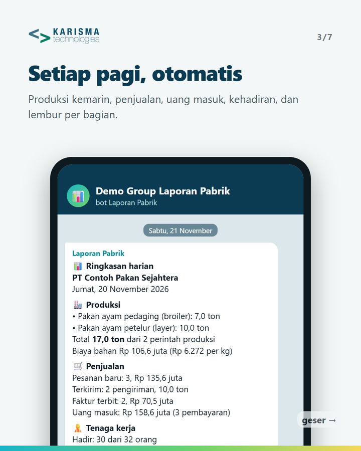
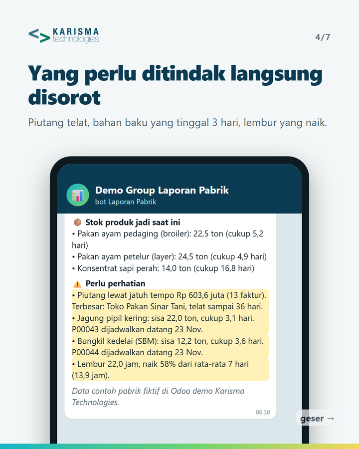
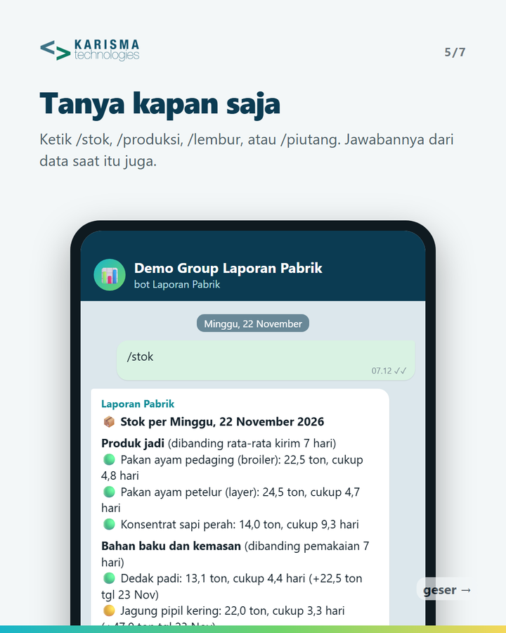

Every morning (Monday to Saturday, 06.30 WIB) your management team
receives a summary in a Telegram group or private chat: production per product and material cost, new orders, deliveries,
invoices, payments received, attendance, overtime per department with estimated cost, finished goods stock, and a
Needs attention section (overdue receivables, raw materials running low, unshipped orders, overtime spikes).
Ask for numbers any time with /laporan, /stok, /produksi, /lembur,
/piutang. All figures are read directly from Odoo, no AI, no re-typing. Interface and messages are in
Indonesian.



Screenshots use a fictional feed factory from our demo database.
/start to the bot, or add the bot to a group.models/laporan.py.Made by Karisma Technologies, Bandung, Indonesia. Need it adapted to your company (other reports, WhatsApp, approval flows)? Contact us on WhatsApp +62 851-3351-3315 or info@karismatech.com.